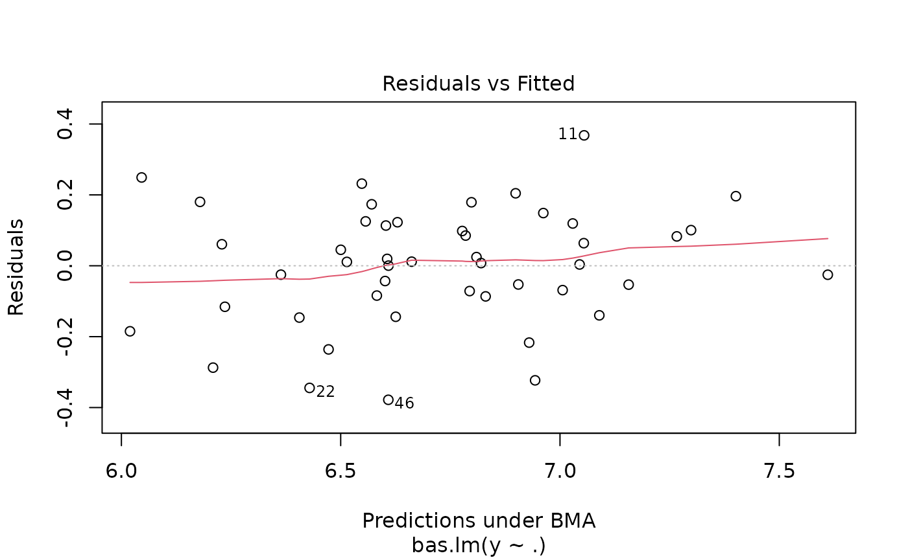
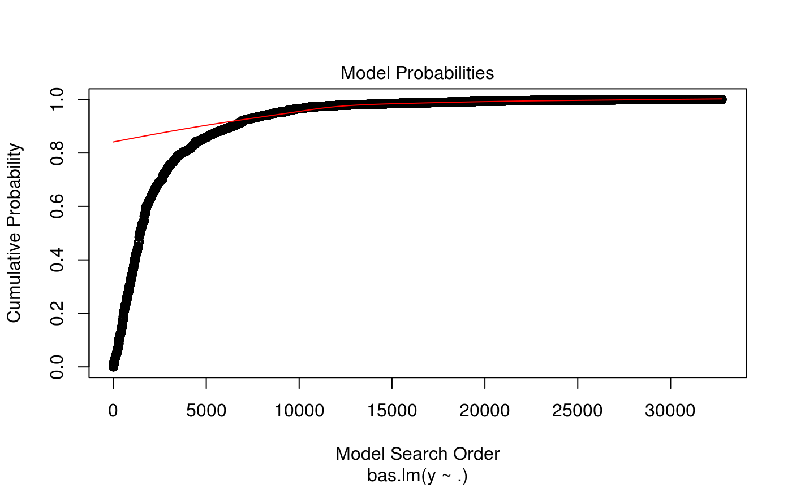
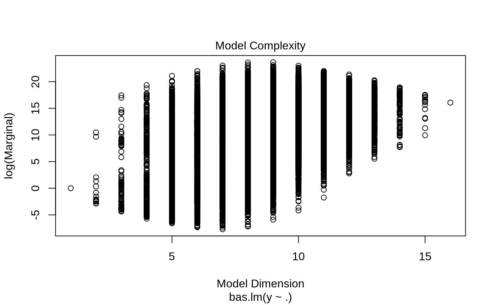
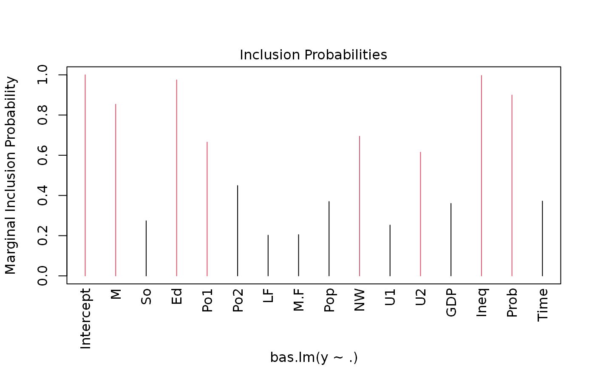
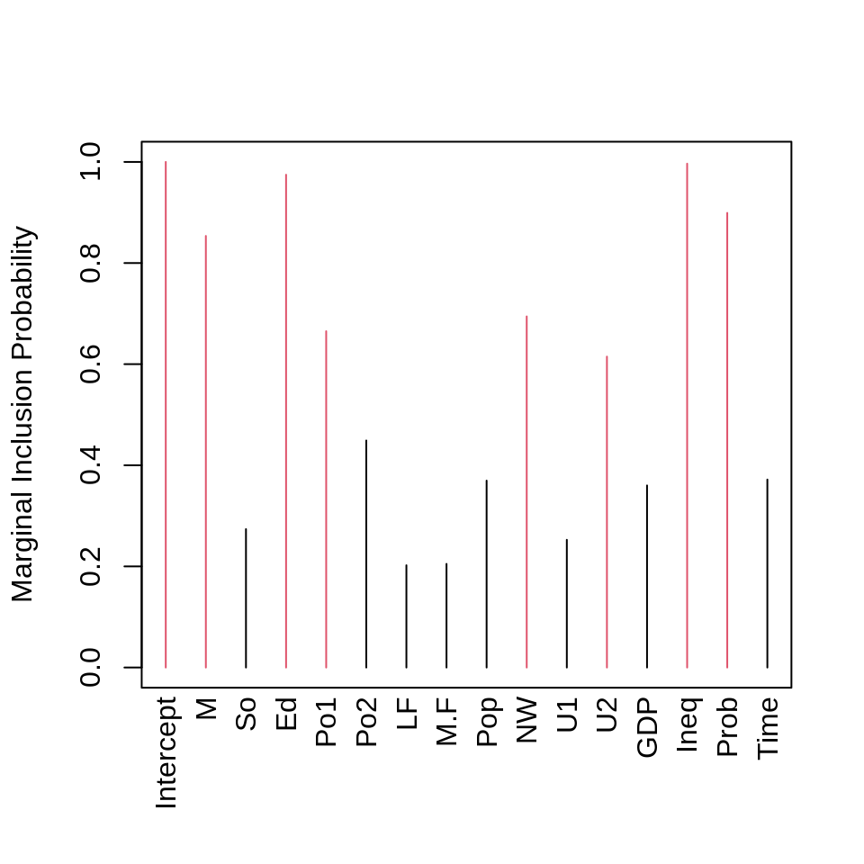
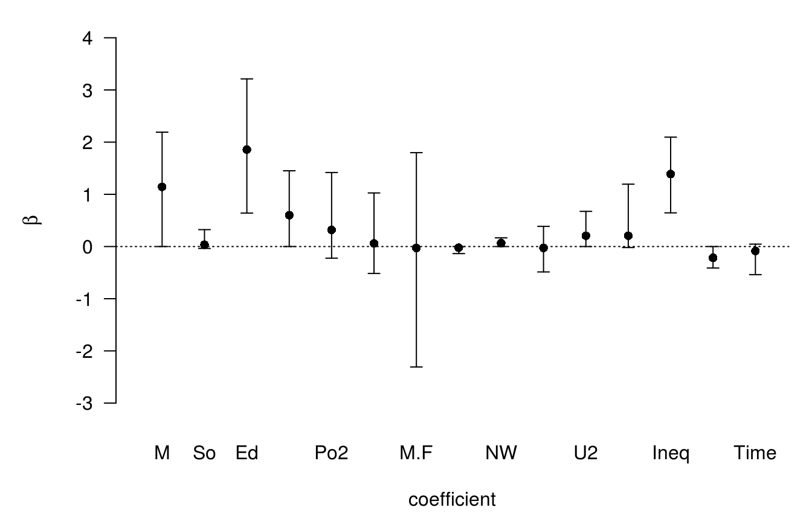
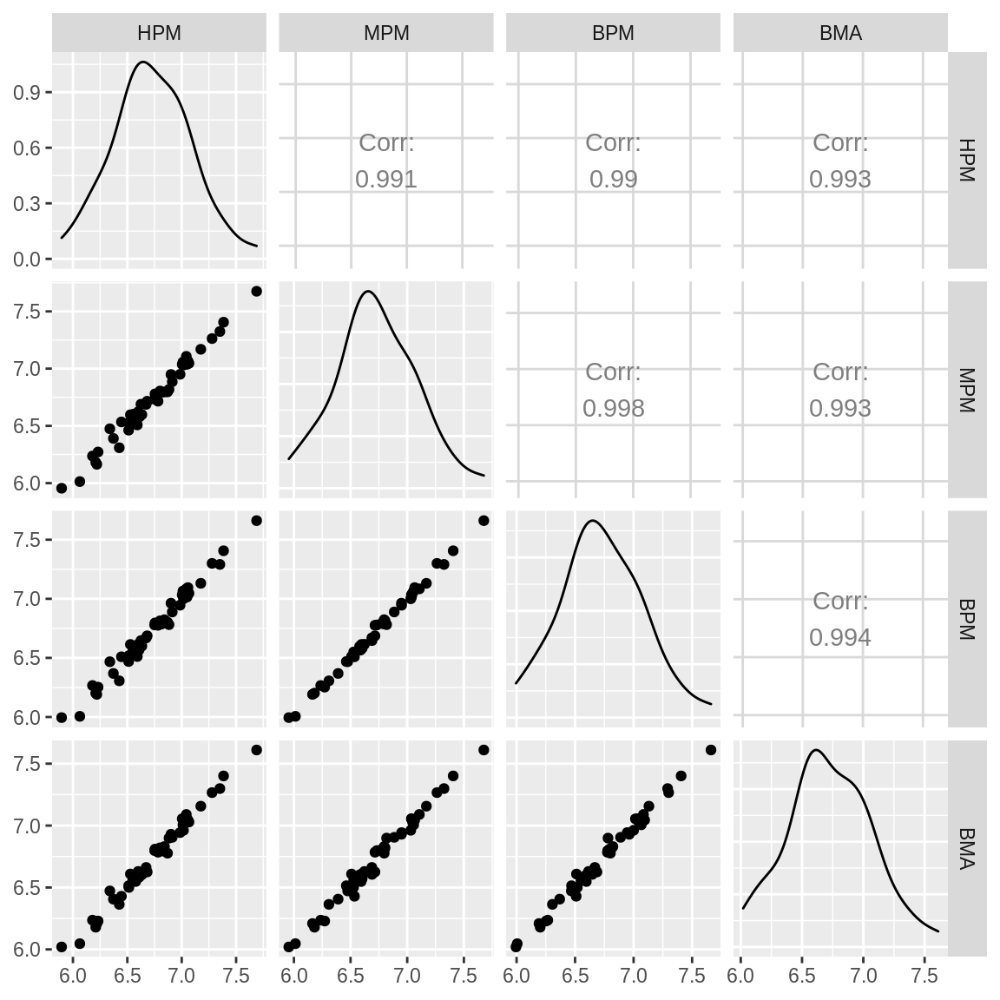
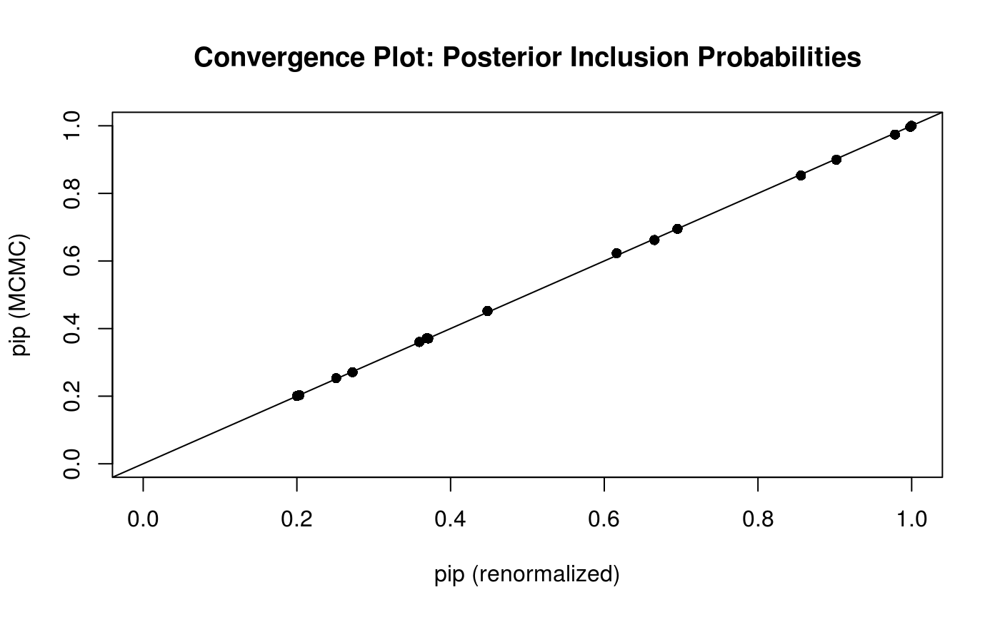
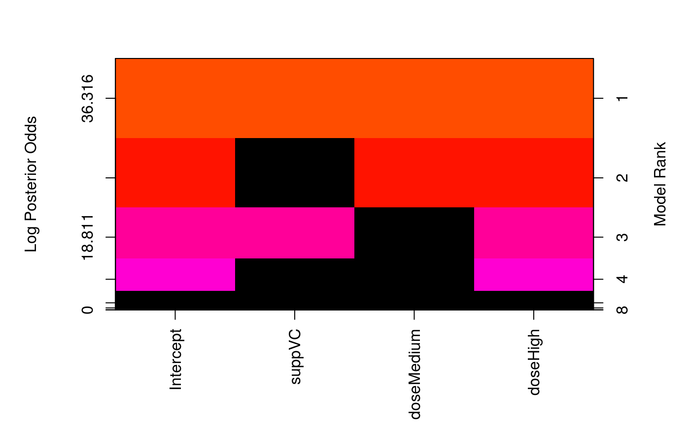
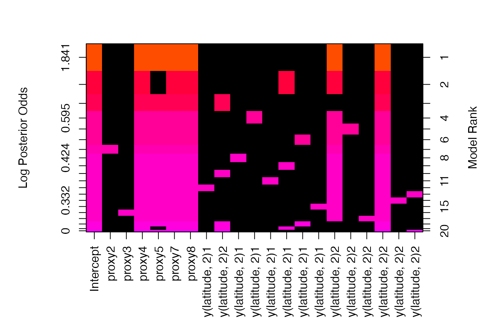

Using the Bayesian Adaptive Sampling (BAS) Package for Bayesian Model Averaging and Variable Selection
Merlise A Clyde
2023-12-06
Source:vignettes/BAS-vignette.Rmd
BAS-vignette.RmdThe BAS package provides easy to use functions to
implement Bayesian Model Averaging in linear models and generalized
linear models. Prior distributions on coefficients are based on
Zellner’s g-prior or mixtures of g-priors, such as the Zellner-Siow
Cauchy prior or mixtures of g-priors from Liang et al (2008)
for linear models, as well as other options including AIC, BIC, RIC and
Empirical Bayes methods. Extensions to Generalized Linear Models are
based on the mixtures of g-priors in GLMs of Li and Clyde
(2019) using an integrated Laplace approximation.
BAS uses an adaptive sampling algorithm to sample
without replacement from the space of models or MCMC sampling which is
recommended for sampling problems with a large number of predictors. See
Clyde, Littman &
Ghosh for more details for the sampling algorithms.
Installing BAS
The stable version can be installed easily in the R
console like any other package:
install.packages("BAS")On the other hand, I welcome everyone to use the most recent version
of the package with quick-fixes, new features and probably new bugs. To
get the latest development version from GitHub, use the
devtools package from CRAN and enter in
R:
devtools::install_github("merliseclyde/BAS")As the package does depend on BLAS and LAPACK, installing from GitHub will require that you have FORTRAN and C compilers on your system.
Demo
We will use the UScrime data to illustrate some of the commands and functionality.
data(UScrime, package = "MASS")Following other analyses, we will go ahead and log transform all of the variables except column 2, which is the indicator variable of the state being a southern state.
UScrime[, -2] <- log(UScrime[, -2])To get started, we will use BAS with the Zellner-Siow
Cauchy prior on the coefficients.
library(BAS)
crime.ZS <- bas.lm(y ~ .,
data = UScrime,
prior = "ZS-null",
modelprior = uniform(), initprobs = "eplogp",
force.heredity = FALSE, pivot = TRUE
)BAS uses a model formula similar to lm to
specify the full model with all of the potential predictors. Here we are
using the shorthand . to indicate that all remaining
variables in the data frame provided by the data argument.
Different prior distributions on the regression coefficients may be
specified using the prior argument, and include
- “BIC”
- “AIC
- “g-prior”
- “hyper-g”
- “hyper-g-laplace”
- “hyper-g-n”
- “JZS”
- “ZS-null”
- “ZS-full”
- “EB-local”
- “EB-global”
where the default is the Zellner-Siow prior, ZS-null, where all Bayes factors are compared to the null model. The newest prior option, “JZS”, also corresponds to the Zellner-Siow prior on the coefficients, but uses numerical integration rather than a Laplace approximation to obtain the marginal likelihood of models.
By default, BAS will try to enumerate all models if
\(p < 19\) using the default
method="BAS". The prior distribution over the models is a
uniform() distribution which assigns equal probabilities to
all models. The last optional argument initprobs = eplogp
provides a way to initialize the sampling algorithm and order the
variables in the tree structure that represents the model space in BAS.
The eplogp option uses the Bayes factor calibration of
p-values \(-e p \log(p)\) to provide an
approximation to the marginal inclusion probability that the coefficient
of each predictor is zero, using the p-values from the full model. Other
options for initprobs include
- “marg-eplogp””
- “uniform”
- numeric vector of length p
The option “marg-eplogp” uses p-values from the \(p\) simple linear regressions (useful for large p or highly correlated variables).
Since we are enumerating under all possible models these options are
not important and the method="deterministic" may be faster
if there are no factors or interactions in the model.
Plots
Some graphical summaries of the output may be obtained by the
plot function
plot(crime.ZS, ask = F)
which produces a panel of four plots. The first is a plot of residuals and fitted values under Bayesian Model Averaging. Ideally, if our model assumptions hold, we will not see outliers or non-constant variance. The second plot shows the cumulative probability of the models in the order that they are sampled. This plot indicates that the cumulative probability is leveling off as each additional model adds only a small increment to the cumulative probability, while earlier, there are larger jumps corresponding to discovering a new high probability model. The third plot shows the dimension of each model (the number of regression coefficients including the intercept) versus the log of the marginal likelihood of the model. The last plot shows the marginal posterior inclusion probabilities (pip) for each of the covariates, with marginal pips greater than 0.5 shown in red. The variables with pip > 0.5 correspond to what is known as the median probability model. Variables with high inclusion probabilities are generally important for explaining the data or prediction, but marginal inclusion probabilities may be small if there are predictors that are highly correlated, similar to how p-values may be large in the presence of multicollinearity.
Individual plots may be obtained using the which
option.
plot(crime.ZS, which = 4, ask = FALSE, caption = "", sub.caption = "")
BAS has print and summary
methods defined for objects of class bas. Typing the
objects name
crime.ZS##
## Call:
## bas.lm(formula = y ~ ., data = UScrime, prior = "ZS-null", modelprior = uniform(),
## initprobs = "eplogp", force.heredity = FALSE, pivot = TRUE)
##
##
## Marginal Posterior Inclusion Probabilities:
## Intercept M So Ed Po1 Po2 LF
## 1.0000 0.8536 0.2737 0.9747 0.6652 0.4490 0.2022
## M.F Pop NW U1 U2 GDP Ineq
## 0.2050 0.3696 0.6944 0.2526 0.6149 0.3601 0.9965
## Prob Time
## 0.8992 0.3718returns a summary of the marginal inclusion probabilities, while the
summary function provides
## P(B != 0 | Y) model 1 model 2 model 3 model 4 model 5
## Intercept 1.0000000 1.00000 1.0000000 1.0000000 1.000000 1.0000000
## M 0.8535720 1.00000 1.0000000 1.0000000 1.000000 1.0000000
## So 0.2737083 0.00000 0.0000000 0.0000000 0.000000 0.0000000
## Ed 0.9746605 1.00000 1.0000000 1.0000000 1.000000 1.0000000
## Po1 0.6651553 1.00000 1.0000000 0.0000000 1.000000 1.0000000
## Po2 0.4490097 0.00000 0.0000000 1.0000000 0.000000 0.0000000
## LF 0.2022374 0.00000 0.0000000 0.0000000 0.000000 0.0000000
## M.F 0.2049659 0.00000 0.0000000 0.0000000 0.000000 0.0000000
## Pop 0.3696150 0.00000 0.0000000 0.0000000 1.000000 0.0000000
## NW 0.6944069 1.00000 1.0000000 1.0000000 1.000000 0.0000000
## U1 0.2525834 0.00000 0.0000000 0.0000000 0.000000 0.0000000
## U2 0.6149388 1.00000 1.0000000 1.0000000 1.000000 1.0000000
## GDP 0.3601179 0.00000 0.0000000 0.0000000 0.000000 0.0000000
## Ineq 0.9965359 1.00000 1.0000000 1.0000000 1.000000 1.0000000
## Prob 0.8991841 1.00000 1.0000000 1.0000000 1.000000 1.0000000
## Time 0.3717976 1.00000 0.0000000 0.0000000 0.000000 0.0000000
## BF NA 1.00000 0.9416178 0.6369712 0.594453 0.5301269
## PostProbs NA 0.01820 0.0172000 0.0116000 0.010800 0.0097000
## R2 NA 0.84200 0.8265000 0.8229000 0.837500 0.8046000
## dim NA 9.00000 8.0000000 8.0000000 9.000000 7.0000000
## logmarg NA 23.65111 23.5909572 23.2000822 23.130999 23.0164741a list of the top 5 models (in terms of posterior probability) with the zero-one indicators for variable inclusion. The other columns in the summary are the Bayes factor of each model to the highest probability model (hence its Bayes factor is 1), the posterior probabilities of the models, the ordinary \(R^2\) of the models, the dimension of the models (number of coefficients including the intercept) and the log marginal likelihood under the selected prior distribution.
Visualization of the Model Space
To see beyond the first five models, we can represent the collection
of the models via an image plot. By default this shows the
top 20 models.
image(crime.ZS, rotate = F)This image has rows that correspond to each of the variables and intercept, with labels for the variables on the y-axis. The x-axis corresponds to the possible models. These are sorted by their posterior probability from best at the left to worst at the right with the rank on the top x-axis.
Each column represents one of the 16 models. The variables that are excluded in a model are shown in black for each column, while the variables that are included are colored, with the color related to the log posterior probability. The color of each column is proportional to the log of the posterior probabilities (the lower x-axis) of that model. The log posterior probabilities are actually scaled so that the 0 corresponds to the lowest probability model in the top 20, so that the values on the axis correspond to log Bayes factors for comparing each model the lowest probability model in the top 20 models. Models that are the same color have similar log Bayes factors which allows us to view models that are clustered together that have Bayes Factors where the differences are not “worth a bare mention”.
This plot indicates that the police expenditure in the two years do not enter the model together, and is an indication of the high correlation between the two variables.
Posterior Distributions of Coefficients
To examine the marginal distributions of the two coefficients for the police expenditures, we can extract the coefficients estimates and standard deviations under BMA.
coef.ZS <- coef(crime.ZS)an optional argument, n.models to coef will
use only the top n.models for BMA and may be more
computationally efficient for large problems.
Plots of the posterior distributions averaging over all of the models
are obtained using the plot method for the bas
coefficient object.
The vertical bar represents the posterior probability that the
coefficient is 0 while the bell shaped curve represents the density of
plausible values from all the models where the coefficient is non-zero.
This is scaled so that the height of the density for non-zero values is
the probability that the coefficient is non-zero. Omitting the
subset argument provides all of the marginal
distributions.
To obtain credible intervals for coefficients, BAS
includes a confint method to create Highest Posterior
Density intervals from the summaries from coef.
confint(coef.ZS)## 2.5% 97.5% beta
## Intercept 6.664072261 6.779557471 6.72493620
## M 0.000000000 2.196582672 1.14359433
## So -0.057942395 0.307860836 0.03547522
## Ed 0.683375639 3.238710292 1.85848834
## Po1 0.000000000 1.442312620 0.60067372
## Po2 -0.208960768 1.445580896 0.31841766
## LF -0.535346268 1.024443040 0.05933737
## M.F -1.935658056 2.297278180 -0.02702786
## Pop -0.126938304 0.005921822 -0.02248283
## NW 0.000000000 0.168788418 0.06668437
## U1 -0.529875354 0.368436912 -0.02456854
## U2 -0.002832435 0.653066846 0.20702927
## GDP -0.040941402 1.221141806 0.20625063
## Ineq 0.674518398 2.136202287 1.39012647
## Prob -0.411851348 0.000000000 -0.21536203
## Time -0.527328029 0.046759470 -0.08433479
## attr(,"Probability")
## [1] 0.95
## attr(,"class")
## [1] "confint.bas"where the third column is the posterior mean. This uses Monte Carlo sampling to draw from the mixture model over coefficient where models are sampled based on their posterior probabilities.
We can also plot these via

## NULLusing the parm argument to select which coefficients to
plot (the intercept is parm=1).
For estimation under selection, BAS supports additional
arguments via estimator. The default is
estimator="BMA" which uses all models or
n.models. Other options include estimation under the
highest probability model
## NULLor the median probability model
where variables that are excluded have distributions that are point masses at zero under selection.
Prediction
BAS has methods defined to return fitted values,
fitted, using the observed design matrix and predictions at
either the observed data or potentially new values,
predict, as with lm.
muhat.BMA <- fitted(crime.ZS, estimator = "BMA")
BMA <- predict(crime.ZS, estimator = "BMA")
# predict has additional slots for fitted values under BMA, predictions under each model
names(BMA)## [1] "fit" "Ybma" "Ypred" "postprobs" "se.fit"
## [6] "se.pred" "se.bma.fit" "se.bma.pred" "df" "best"
## [11] "bestmodel" "best.vars" "estimator"Plotting the two sets of fitted values,
par(mar = c(9, 9, 3, 3))
plot(muhat.BMA, BMA$fit,
pch = 16,
xlab = expression(hat(mu[i])), ylab = expression(hat(Y[i]))
)
abline(0, 1)we see that they are in perfect agreement. That is always the case as the posterior mean for the regression mean function at a point \(x\) is the expected posterior predictive value for \(Y\) at \(x\). This is true not only for estimators such as BMA, but the expected values under model selection.
Inference with model selection
In addition to using BMA, we can use the posterior means under model
selection. This corresponds to a decision rule that combines estimation
and selection. BAS currently implements the following
options
highest probability model:
HPM <- predict(crime.ZS, estimator = "HPM")
# show the indices of variables in the best model where 0 is the intercept
HPM$bestmodel## [1] 0 1 3 4 9 11 13 14 15A little more interpretable version with names:
variable.names(HPM)## [1] "Intercept" "M" "Ed" "Po1" "NW" "U2"
## [7] "Ineq" "Prob" "Time"median probability model:
MPM <- predict(crime.ZS, estimator = "MPM")
variable.names(MPM)## [1] "Intercept" "M" "Ed" "Po1" "NW" "U2"
## [7] "Ineq" "Prob"This is the model where all predictors have an inclusion probability greater than or equal to 0.5. This coincides with the HPM if the predictors are all mutually orthogonal, and in this case is the best predictive model under squared error loss.
Note that we can also extract the best model from the attribute in the fitted values as well.
best predictive model:
In general, the HPM or MPM are not the best predictive models, which from a Bayesian decision theory perspective would be the model that is closest to BMA predictions under squared error loss.
BPM <- predict(crime.ZS, estimator = "BPM")
variable.names(BPM)## [1] "Intercept" "M" "So" "Ed" "Po1" "Po2"
## [7] "M.F" "NW" "U2" "Ineq" "Prob"Let’s see how they compare:
GGally::ggpairs(data.frame(
HPM = as.vector(HPM$fit), # this used predict so we need to extract fitted values
MPM = as.vector(MPM$fit), # this used fitted
BPM = as.vector(BPM$fit), # this used fitted
BMA = as.vector(BMA$fit)
)) # this used predict
Using the se.fit = TRUE option with predict
we can also calculate standard deviations for prediction or for the mean
and use this as input for the confint function for the
prediction object.
BPM <- predict(crime.ZS, estimator = "BPM", se.fit = TRUE)
crime.conf.fit <- confint(BPM, parm = "mean")
crime.conf.pred <- confint(BPM, parm = "pred")
plot(crime.conf.fit)## NULL
plot(crime.conf.pred)## NULLFor prediction at new points, we can supply a new dataframe to the
predict function as in lm.
new.pred <- predict(crime.ZS, newdata = UScrime, estimator = "MPM")Alternative algorithms
BAS has several options for sampling from the model
space with or without enumeration. The (current) default
method="BAS" samples models without replacement using
estimates of the marginal inclusion probabilities using the algorithm
described in Clyde et
al (2011). The initial sampling probabilities provided by
initprobs are updated based on the sampled models, every
update iterations. This can be more efficient in some cases
if a large fraction of the model space has been sampled, however, in
cases of high correlation and a large number of predictors, this can
lead to biased estimates Clyde and Ghosh (2012),
in which case MCMC is preferred. The method="MCMC" is
described below and is better for large \(p\).
A deterministic sampling scheme is also available for enumeration;
system.time(
for (i in 1:10) {
crime.ZS <- bas.lm(y ~ .,
data = UScrime,
prior = "ZS-null", method = "BAS",
modelprior = uniform(), initprobs = "eplogp"
)
}
)## user system elapsed
## 1.374 0.001 1.374
system.time(
for (i in 1:10) {
crime.ZS <- bas.lm(y ~ .,
data = UScrime,
prior = "ZS-null", method = "deterministic",
modelprior = uniform(), initprobs = "eplogp"
)
}
)## user system elapsed
## 1.295 0.004 1.301which is faster for enumeration than the default method=“BAS”.
Beyond Enumeration
Many problems are too large to enumerate all possible models. In such
cases we may use the method="BAS" to sample without
replacement or the method="MCMC" option to sample models
using Markov Chain Monte Carlo sampling to sample models based on their
posterior probabilities. For spaces where the number of models greatly
exceeds the number of models to sample, the MCMC option is recommended
as it provides estimates with low bias compared to the sampling without
replacement of BAS (Clyde and Ghosh 2011).
crime.ZS <- bas.lm(y ~ .,
data = UScrime,
prior = "ZS-null",
modelprior = uniform(),
method = "MCMC"
)This will run the MCMC sampler until the number of unique sampled
models exceeds n.models which is \(2^p\) (if \(p
< 19\)) by default or until MCMC.iterations has
been exceeded, where MCMC.iterations = n.models*2 by
default.
Estimates of Marginal Posterior Inclusion Probabilities (pip)
With MCMC sampling there are two estimates of the marginal inclusion
probabilities: object$probne0 which are obtained by using
the re-normalized posterior odds from sampled models to estimate
probabilities and the estimates based on Monte Carlo frequencies
object$probs.MCMC. These should be in close agreement if
the MCMC sampler has run for enough iterations.
BAS includes a diagnostic function to compare the two
sets of estimates of posterior inclusion probabilities and posterior
model probabilities
diagnostics(crime.ZS, type = "pip", pch = 16)
diagnostics(crime.ZS, type = "model", pch = 16)In the left hand plot of pips, each point represents one posterior
inclusion probability for the 15 variables estimated under the two
methods. The two estimators are in pretty close agreement. The plot of
the model probabilities suggests that we should use more
MCMC.iterations if we want more accurate estimates of the
posterior model probabilities.
crime.ZS <- bas.lm(y ~ .,
data = UScrime,
prior = "ZS-null",
modelprior = uniform(),
method = "MCMC", MCMC.iterations = 10^6
)
diagnostics(crime.ZS, type="model", pch=16)Outliers
BAS can also be used for exploring mean shift or variance inflation outliers by adding indicator variables for each case being an outlier (the mean is not given by the regression) or not. This is similar to the MC3.REG function in BMA, although here we are using a g-prior or mixture of g-priors for the coefficients for the outlier means.
Using the Stackloss data, we can add an identify matrix to the original dataframe, where each column is an indicator that the ith variable is an outlier.
data("stackloss")
stackloss <- cbind(stackloss, diag(nrow(stackloss)))
stack.bas <- bas.lm(stack.loss ~ .,
data = stackloss,
method = "MCMC", initprobs = "marg-eplogp",
prior = "ZS-null",
modelprior = tr.poisson(4, 10),
MCMC.iterations = 200000
)The above call introduces using truncated prior distributions on the model space; in this case the distribution of the number of variables to be included has a Poisson distribution, with mean 4 (under no truncation), and the truncation point is at 10, so that all models with more than 10 (one half of cases rounded down) will have probability zero. This avoids exploration of models that are not full rank.
Looking at the summaries
knitr::kable(as.data.frame(summary(stack.bas)))| P(B != 0 | Y) | model 1 | model 2 | model 3 | model 4 | model 5 | |
|---|---|---|---|---|---|---|
| Intercept | 1.000000 | 1.00000 | 1.0000000 | 1.0000000 | 1.0000000 | 1.0000000 |
| Air.Flow | 0.999525 | 1.00000 | 1.0000000 | 1.0000000 | 1.0000000 | 1.0000000 |
| Water.Temp | 0.470095 | 1.00000 | 0.0000000 | 1.0000000 | 1.0000000 | 0.0000000 |
| Acid.Conc. | 0.094960 | 0.00000 | 0.0000000 | 0.0000000 | 0.0000000 | 0.0000000 |
1 |
0.594510 | 1.00000 | 1.0000000 | 1.0000000 | 1.0000000 | 1.0000000 |
2 |
0.163285 | 0.00000 | 0.0000000 | 0.0000000 | 1.0000000 | 0.0000000 |
3 |
0.633340 | 1.00000 | 1.0000000 | 1.0000000 | 1.0000000 | 1.0000000 |
4 |
0.953480 | 1.00000 | 1.0000000 | 1.0000000 | 1.0000000 | 1.0000000 |
5 |
0.067725 | 0.00000 | 0.0000000 | 0.0000000 | 0.0000000 | 0.0000000 |
6 |
0.081795 | 0.00000 | 0.0000000 | 0.0000000 | 0.0000000 | 0.0000000 |
7 |
0.068145 | 0.00000 | 0.0000000 | 0.0000000 | 0.0000000 | 0.0000000 |
8 |
0.065080 | 0.00000 | 0.0000000 | 0.0000000 | 0.0000000 | 0.0000000 |
9 |
0.062815 | 0.00000 | 0.0000000 | 0.0000000 | 0.0000000 | 0.0000000 |
10 |
0.066315 | 0.00000 | 0.0000000 | 0.0000000 | 0.0000000 | 0.0000000 |
11 |
0.067015 | 0.00000 | 0.0000000 | 0.0000000 | 0.0000000 | 0.0000000 |
12 |
0.085965 | 0.00000 | 0.0000000 | 0.0000000 | 0.0000000 | 0.0000000 |
13 |
0.344920 | 0.00000 | 1.0000000 | 1.0000000 | 0.0000000 | 0.0000000 |
14 |
0.181825 | 0.00000 | 0.0000000 | 0.0000000 | 0.0000000 | 0.0000000 |
15 |
0.073965 | 0.00000 | 0.0000000 | 0.0000000 | 0.0000000 | 0.0000000 |
16 |
0.059965 | 0.00000 | 0.0000000 | 0.0000000 | 0.0000000 | 0.0000000 |
17 |
0.063980 | 0.00000 | 0.0000000 | 0.0000000 | 0.0000000 | 0.0000000 |
18 |
0.065245 | 0.00000 | 0.0000000 | 0.0000000 | 0.0000000 | 0.0000000 |
19 |
0.088830 | 0.00000 | 0.0000000 | 0.0000000 | 0.0000000 | 0.0000000 |
20 |
0.136580 | 0.00000 | 0.0000000 | 0.0000000 | 0.0000000 | 0.0000000 |
21 |
0.984110 | 1.00000 | 1.0000000 | 1.0000000 | 1.0000000 | 1.0000000 |
| BF | NA | 1.00000 | 0.3397571 | 0.5779604 | 0.5555328 | 0.2016282 |
| PostProbs | NA | 0.05830 | 0.0216000 | 0.0208000 | 0.0201000 | 0.0170000 |
| R2 | NA | 0.98920 | 0.9873000 | 0.9923000 | 0.9922000 | 0.9803000 |
| dim | NA | 7.00000 | 7.0000000 | 8.0000000 | 8.0000000 | 6.0000000 |
| logmarg | NA | 23.82319 | 22.7436630 | 23.2749373 | 23.2353597 | 22.2218573 |
Factors and Hierarchical Heredity
BAS now includes constraints for factors so that all terms that
represent a factor are either included or excluded together. To
illustrate, we will use the data set ToothGrowth and
convert dose to a factor:
data(ToothGrowth)
ToothGrowth$dose <- factor(ToothGrowth$dose)
levels(ToothGrowth$dose) <- c("Low", "Medium", "High")and fit the model of main effects and two way interaction without any constraints:
TG.bas <- bas.lm(len ~ supp*dose,
data = ToothGrowth,
modelprior = uniform(), method = "BAS"
)
image(TG.bas)From the image of the model space, we see that levels of a factor
enter or drop from the model independently and that interactions may be
included without the main effects. This may lead to more parsimonious
models, however, the hypotheses that are being tested about the
coefficients that represent the factor depend on the choice for the
reference group. To force levels of a factor to enter or leave together
we can use force.heredity = TRUE.
The force.heredity option also forces interactions to be
included only if the main effects are also included, or for models with
several factors and higher order interactions, the heredity constraint
implies that all lower order interactions must be included before adding
higher order interactions.
TG.bas <- bas.lm(len ~ supp * dose,
data = ToothGrowth,
modelprior = uniform(), method = "BAS", force.heredity = TRUE
)
image(TG.bas)
The force.heredity is set to FALSE for the sampling
methods MCMC+BAS and deterministic. If there
are more than 20 predictors and factors, then we recommend using
MCMC to enforce the constraints. Alternatively, there is a
function, force.heredity.bas, to post-process the output to
drop models that violate the hierarchical heredity constraint:
TG.bas <- bas.lm(len ~ supp * dose,
data = ToothGrowth,
modelprior = uniform(), method = "BAS", force.heredity = FALSE
)
TG.herid.bas <- force.heredity.bas(TG.bas)that can be used with those sampling methods.
Weighted Regression
BAS can perform weighted regression by supplying an
optional weight vector that is of the same length as the response where
the assumption is that the variance of the response is proportional to
1/weights. The g-prior incorporates the weights in the prior covariance,
\[
\sigma^2 g (X_\gamma^T W X_\gamma)^{-1}
\] where \(X_\gamma\) is the
design matrix under model \(\gamma\)
and \(W\) is the \(n \times n\) diagonal matrix with the
weights on the diagonal.
To illustrate, we will use the climate data, available at the url below
## 'data.frame': 63 obs. of 5 variables:
## $ deltaT : num -2.6 -2.6 -2.9 -2.4 -2.8 -1.2 -2.4 -2.6 -2.4 -2.5 ...
## $ sdev : num 0.7 0.8 0.9 0.7 0.7 0.3 1.3 1.3 1.3 0.5 ...
## $ proxy : int 1 1 1 1 1 1 1 1 1 1 ...
## $ T.M : int 1 1 1 1 1 1 1 1 1 1 ...
## $ latitude: num 2.5 2.2 0.5 0.3 0.2 -1.1 5.2 11.4 14.6 6.3 ...
summary(climate)## deltaT sdev proxy T.M
## Min. :-7.000 Min. :0.1500 Min. :1.000 Min. :0.0000
## 1st Qu.:-3.900 1st Qu.:0.5000 1st Qu.:2.000 1st Qu.:1.0000
## Median :-2.900 Median :0.7000 Median :3.000 Median :1.0000
## Mean :-3.111 Mean :0.8579 Mean :3.333 Mean :0.8254
## 3rd Qu.:-2.000 3rd Qu.:1.3000 3rd Qu.:5.000 3rd Qu.:1.0000
## Max. : 0.200 Max. :2.5000 Max. :8.000 Max. :1.0000
## latitude
## Min. :-22.500
## 1st Qu.: -3.450
## Median : 0.200
## Mean : 2.187
## 3rd Qu.: 9.700
## Max. : 29.000which includes measurements of changes in temperature
(deltaT) at various latitudes as well as a
measure of the accuracy of the measured values sdev for 8
different types proxy of obtaining measurements. We will
use this to explore weighted regression and the option to group terms in
factors or from poly. For illustration purposes, we will
eliminate proxy == 6 which has only one level as the
interactions are not estimable, and then convert proxy to a
factor.
We can fit a weighted regression with weights = 1/sdev^2
with the following code
climate.bas <- bas.lm(deltaT ~ proxy * poly(latitude, 2),
data = climate,
weights = 1 / sdev^2,
prior = "hyper-g-n", alpha = 3.0,
n.models = 2^20,
force.heredity=TRUE,
modelprior = uniform()
)Examining the image of the top models,
image(climate.bas, rotate = F)we see that all levels of a factor enter or drop from the model
together, as well as the vectors in the design matrix to represent the
term poly.
Rerunning without the constraint,
# May take a while to enumerate all 2^20 models
climate.bas <- bas.lm(deltaT ~ proxy * poly(latitude, 2),
data = climate,
weights = 1 / sdev^2,
prior = "hyper-g-n", alpha = 3.0,
n.models = 2^20,
modelprior = uniform(),
force.heredity = FALSE
)
image(climate.bas)
allows one to see which factors levels are different from the reference group.
Summary
BAS includes other prior distributions on coefficients
and models, as well as bas.glm for fitting Generalized
Linear Models. The syntax for bas.glm and
bas.lm are not yet the same, particularly for how some of
the priors on coefficients are represented, so please see the
documentation for more features and details until this is updated or
another vignette is added!
For issues or feature requests please submit via the package’s github page merliseclyde/BAS